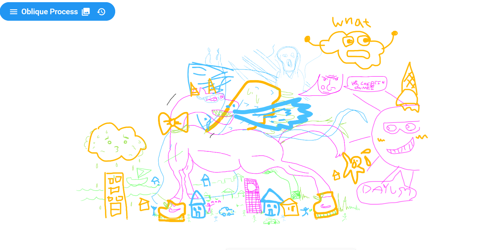
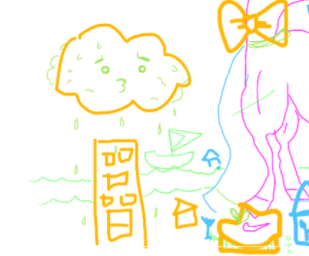
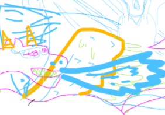

Oblique Strategy
Group Name: Half and Half
Group members:Matteo, Tamaki, Kevin, Rachel
Two oblique strategies that we used is
"Only a part, not the whole" and "Honor thy error as hidden intention".

Pink:Matteo, Yellow:Tamaki, Kevin:Blue, Rachel:Green
 As a group, we decided to collaborate on a drawing together by having one person start the drawing, then everyone else joins in. Matteo started off first to draw what appears to be a horse's body, and so I added a leg to the horse. The mistakes made in the picture that I wanted to erase was the two feather marks of the wings. I wanted to show feathers but it looked really awful. Even though its a mistake, my intention of it being drawn is there and could be depicted. I drew a face on the cloud, which was Tamaki's drawing. I decided to add details like shoe laces of the sneakers that Tamaki drew. Tamaki and I drew houses in which to my response, where I started drawing people. Matteo started to draw taller strucure buildings. The horse/dragon was missing teeth and so I decided to add spikey teeth. These smaller drawings create a bigger "whole" picture, but because of the collaboration, you get to see what each person has to add. None of the group members and I used the eraser in which we intentionally did just to keep it authentic and the thought process flow naturally, then starting over and erasing it.